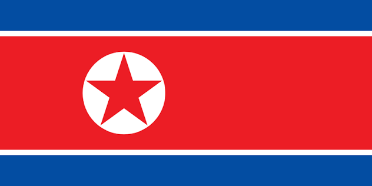

Severni Korea
Severni Korea, oficialne Koreiska lidove demokraticka republika, je stat ve vychodni Asii na severu Koreiskeho poloostrova.
Zakladni fakta
- Hlavni mesto: Pchjongjang
- Rozloha: cca 120 540 km²
- Pocet obyvatel: pres 25 milionu
- Uredni jazyk: korejstina
Zajimavosti
- Je jednou z posledne komunistickych zemi na svete
- Ma jeden z nejizolovanejsich rezimu na svete
- Hranici s Jiznou Koreou tvori jedna z nejvice strezenych hranic na svete
Vlajka

Vice na Wikipedii